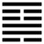

Sơn Phong Cổ (蠱 gǔ)
Thoán từ:
蠱: 元亨, 利涉大川．先甲三日, 後甲三日．
Cổ: Nguyên hanh, lợi thiệp đại xuyên
Tiên giáp tam nhật, hậu giáp tam nhật.
Dịch: Đổ nát mà làm lại mới thì rất tốt, vượt qua sông lớn thì lợi. Ba ngày trước ngày giáp (nghĩa là phải tìm nguyên nhân từ trước), ba ngày sau ngày giáp (phải nghĩ đến tương lai nên thể nào).
Giảng: Quẻ này trên là núi, dưới là gió, gió đụng núi, quật lại, đó là tượng loạn, không yên, tất phải có công việc.
Cũng có thể giảng như sau: tốn ở dưới là thuận, mà Cấn ở trên là ngưng chỉ; người dưới thì thuận mà người trên cứ ngồi im; hoặc người dưới một mực nhu, người trên một mực cương (Tốn thuộc âm, mà hào 1 cùng là âm, còn Cấn thuộc dương, mà hào cuối cùng thuộc dương ), để nén người dưới, như vậy mọi sự sẽ đổ nát, phải làm lại.
Đổ nát mà làm lại thì rất nên, rất tốt; phải xông pha nguy hiểm, nhưng rồi sẽ có lợi.
Tuy nhiên phải suy nghĩ, có kế hoạch trước sau. Ví dụ bắt tay vào việc là ngày giáp, thì phải nghĩ tới ba ngày trước ngày giáp, tức ngày tân [辛], tìm xem vì lẽ gì mà có sự đổ nát, và muốn đổi cũ sang mới (mới cũng là tân, nhưng chữ tân này [新], người Trung Hoa thường có cách mượn một chữ đồng âm để diễn một ý khác) thì phải làm sao. Rồi lại nghĩ đến ba ngày sau, tức ngày đinh [ 丁], mà đinh ninh (chữ [丁 寧] này) phòng bị cho tương lai.
Làm lại mới mà được như vậy thì rất tốt.
Thoán truyện và Đại tượng truyện không giảng gì khác.
Ý nghĩa các hào:
1.
初六: 幹父之蠱, 有子, 考无咎, 厲, 終吉．
Sơ lục: Cán phụ chi cổ, hữu tử, khảo vô cữu, lệ, chung cát.
Dịch: Hào 1, âm: Sửa sang sự đổ nát của cha; nhờ con mà cha không lỗi; nhưng cũng có thể nguy đấy, phải biết răn sợ, sau mới tốt.
Quẻ Cổ này lấy việc trong nhà làm thí dụ, nên nói đến cha, con.
2.
九二: 幹母之蠱, 不可貞．
Cửu nhị: Cán mẫu chi cổ, bất khả trinh.
Dịch: Hào 2, dương : Sửa sang sự đổ nát của mẹ, không nên cố chấp (trinh)
Giảng: Hào này dương cương, đắc trung, trên ứng với hào 5 âm nhu, nên ví như con (2) với mẹ (5). Hào 2 có tài, sửa sang được, nhưng tính cương cường, có thể xung đột với 5, cho nên Hào từ khuyên đừng cố chấp mà phải mềm dẻo.
3.
九三: 幹父之蠱, 小有悔, 无大咎．
Cửu tam: Cán phụ chi cổ, tiểu hữu hối, vô đại cữu.
Dịch: Hào 3, dương: sửa sang sự đổ nát của cha, có chút hối hận những không có lỗi lớn.
Giảng: Hào này là dương lại ở vị dương, là quá cương, nóng nảy, không hợp đạo trung cho nên làm vài việc đáng ăn năn; nhưng làm nổi việc, đắc chính, nên không đến nỗi có lỗi lớn.
Ví như người con trung ngôn, trực gián mà giữ được đạo lý cho cha.
4.
六四: 裕父之蠱, 往見吝．
Lục tứ: Dụ phụ chi Cổ, vãng kiến lận.
Dịch: Hào 4, âm: (Vì dùng dằng mà chỉ) kéo dài sự đổ nát của cha, nếu cứ như vậy hoài thì sẽ hối tiếc.
Giảng: Hào âm, nhu lại ở vị âm, là người thiếu nghị lực, nhút nhát, không dám cương quyết sửa sự đổ nát của cha, để cho nó kéo dài hoài thì xấu cho cả gia đình mà phải hối hận.
5.
六五: 幹 父之蠱, 用譽．
Lục ngũ: Cán phụ chi cổ, dụng dự
Dịch: Hào 5, âm: sửa sự đổ nát cho cha, mà được tiếng khen.
Giảng: Âm nhu ở ngôi chí tôn, không đủ tài sáng nghiệp, nhưng nhờ có đức trung mà ở dưới ứng với hào 2, dương cương là người có tài, sửa sự đổ nát được, rốt cuộc thành công, cả hai được tiếng khen.
6.
上九: 不事王侯, 高尚 其事．
Thượng cửu: Bất sự vương hầu, cao thượng kỳ sự.
Dịch: Hào trên cùng, dương : Không xu phụ bậc vương hầu, mà nêu cao tư cách (đức của mình.)
Giảng: Hào này dương cương ở trên hào 5, như một vị hiền nhân quân tử cao khiết, ở ngoài mọi việc, không màng phú quí, không xu phụ vương hầu, giữ chí hướng của mình làm phép tắc trong thiên hạ.
*
Người Trung Hoa rất trọng đức hiếu, mà có hiếu trước hết là giữ được danh dự cho gia đình, làm vẻ vang cho tổ tiên, cho nên nếu cha mẹ làm điều gì trái đạo lý thì con có bổn phận can ngăn (cha có con như vậy là nhà có phúc), nếu còn nhu nhược quá, dùng dằng không dám can thì có lỗi lớn; nếu cương cường quá mà xung đột với cha mẹ thì có lỗi, nhưng nhẹ, tốt nhất là giữ đạo trung, mềm mỏng mà kiên trì, ngoài nhu mà trong cương.
Quẻ này kết một cách bất ngờ: hào trên cùng không nói gì về việc sửa sang sự đổ nát cả, mà chỉ khen bậc hiền nhân treo gương danh tiết cho thiên hạ soi.
Nên để ý: Cổ là đổ nát, rất xấu mà thoán từ khen là tốt, chỉ vì đổ nát thì phải làm lại, canh tân, mà canh tân là điều rất tốt. Không có gì suy cực mà không thịnh lên, tới lúc cùng mà không bắt đầu trở lại.